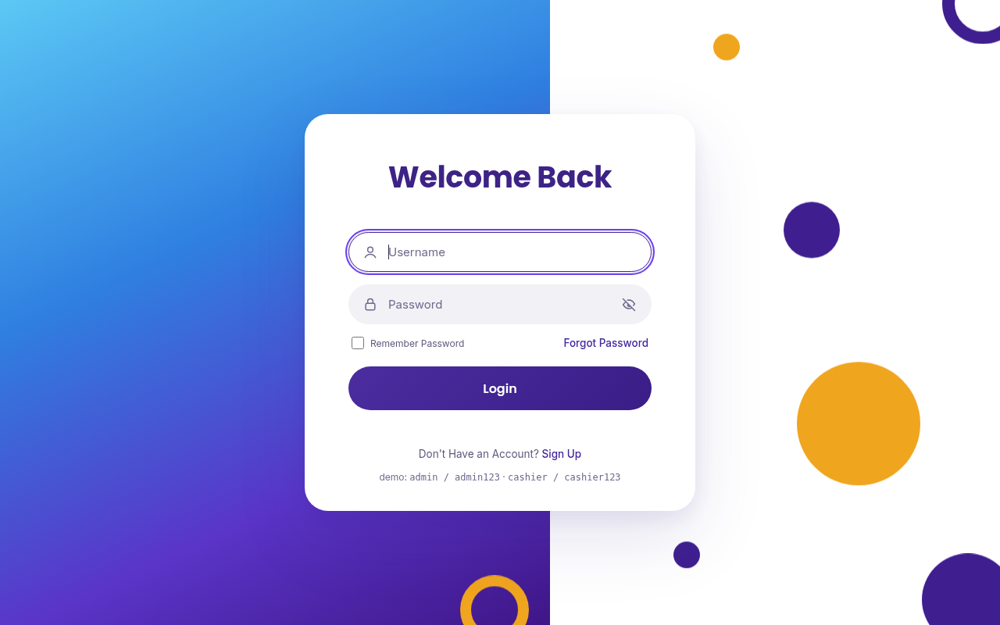

What Is a POS System? A Plain-Language Guide for Kenyan Shop Owners
ShujaaPOS · November 2026 · 6 min read
Walk into a minimart in Nairobi and watch the counter for ten minutes. The cashier punches a price, the receipt prints, the soda leaves the shelf, and somewhere, that sale is either being recorded properly or lost in a notebook under the counter. That difference is a POS system.
POS stands for point of sale, the place where money changes hands. A POS system is the software (and sometimes hardware) that records each sale, updates your stock, and shows you where the money went. This guide explains what it actually does, in the plainest terms, so you can decide whether your shop needs one.
What a POS system actually does
Forget the jargon for a moment. On a normal day, a POS does five jobs:
- Ringing up sales. Scan a barcode or tap a product tile, the price is pulled from your catalogue, the maths is done for you: totals, discounts, VAT and change.
- Printing or sharing receipts. For the customer, and as your permanent record of every transaction.
- Updating stock automatically. Sell a crate of soda, your count drops by 24 bottles, no evening stocktaking to find the missing crates.
- Recording payments. Cash, M-Pesa, card, even a sale split across two methods, or sold on credit to a regular customer.
- Producing reports. Today's revenue, your fastest-moving products, how much VAT you collected, which cashier sold what, without you adding anything up.

This is the actual sign-in screen of our own till. A POS starts as just a piece of software on a machine you already own.
POS vs the notebook
Most Kenyan shops start the same way: a counter book where sales are written by hand, or nothing written at all. Here's an honest comparison:
| Notebook / memory | POS system | |
|---|---|---|
| Sale records | Whatever got written down | Every transaction, automatically |
| Stock count | Counted by hand, often skipped | Updates with each sale |
| Change errors | Mental maths under pressure | Calculated and shown on screen |
| Cashier honesty | Hard to verify | Sales tied to logins and shifts |
| End of day | Count the drawer, guess | Expected vs counted, difference shown |
| Costs | Free, until errors and shrinkage | Software + a device you likely own |
The notebook's real cost is invisible: miscalculated change, unrecorded sales, stock that "disappears", and a day-end that takes an hour of counting instead of a glance at a report.
What you need to run one
People picture supermarket terminals: touchscreens, big printers, a server room. Those exist, but a working POS can be far simpler:
- A device: a laptop, a cheap Windows or Linux PC, or an Android phone.
- The software: the till itself, installed or opened in a browser.
- Optionally: a barcode scanner (roughly KSh 2,000 to 5,000 for a basic USB one), a thermal receipt printer, and a cash drawer.
A duka with a laptop and a barcode scanner is a real POS setup. A supermarket might add label printers and multiple tills, but the software is doing the same job at both scales.
The Kenyan question nobody answers: what about internet?
Most POS advice is written for countries with reliable fibre. Here, the real question is what happens when the internet drops mid-sale, because it will.
Two types of systems exist:
- Cloud-only POS: everything runs on a remote server. The till is just a screen. No internet, no sale. If your fibre or bundles are spotty, this is a genuine business risk.
- Offline-first POS: the till works entirely on its own, recording every sale locally and syncing to the cloud when a connection returns. The internet becomes a backup channel, not a lifeline.
Signs your shop needs a POS now
- You can't say, within a thousand shillings, what yesterday's sales were.
- Stock goes missing and you only find out when a customer asks for it.
- You have a second branch, or you want one, and can't watch both.
- More than one person works the till and you can't tell who sold what.
- M-Pesa payments get mixed up with cash when you count at night.
If two or more of those sound familiar, a POS will likely pay for itself in fewer errors and less shrinkage.
Where ShujaaPOS fits
We built ShujaaPOS for exactly this environment: it runs offline-first on the counter machine or an Android phone, pairs extra devices over your shop Wi-Fi, handles M-Pesa and split payments, reconciles till shifts, and syncs sales to a cloud dashboard whenever the internet cooperates. It's free to start: the app and the backend are ours, and this article was written by the people who built it.
Try ShujaaPOS free